Приложение работает на 100% автономно в цехах и подвалах без доступа к интернету.
The app is designed to be 100% autonomous, working flawlessly in workshops without cellular network.
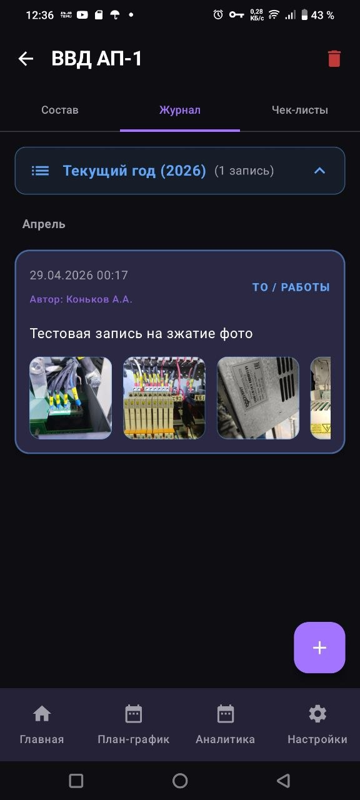
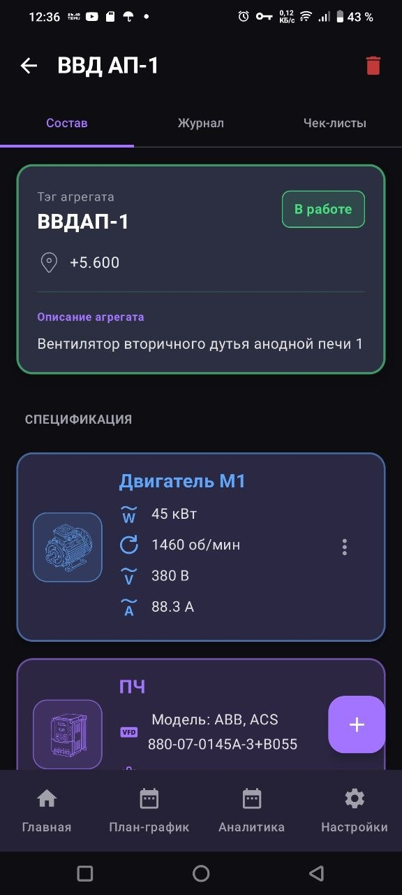
Наглядная структура. Находите любой нужный узел за пару секунд благодаря строгой логике построения базы.
Clear structure. Find any necessary node in a few seconds thanks to the strict database structure logic.
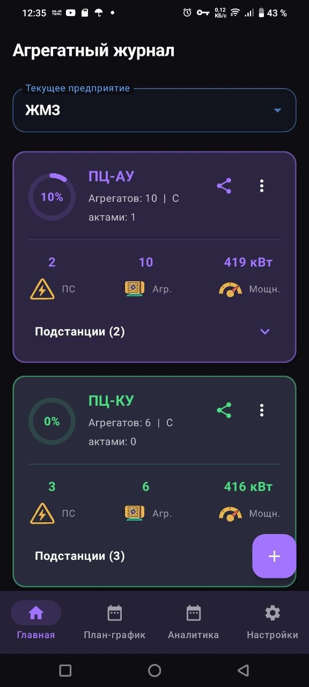
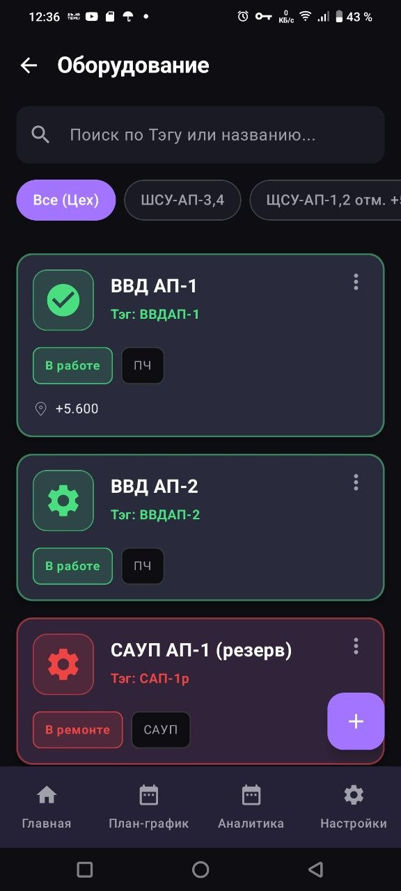
Распределяйте задачи по дням месяца и контролируйте их выполнение с помощью удобного списка.
Distribute tasks by days of the month and track their completion using a convenient list.
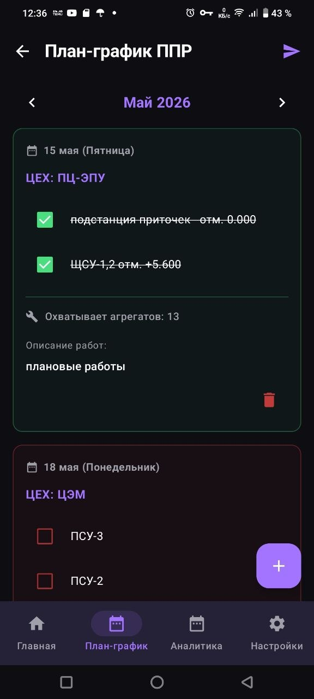
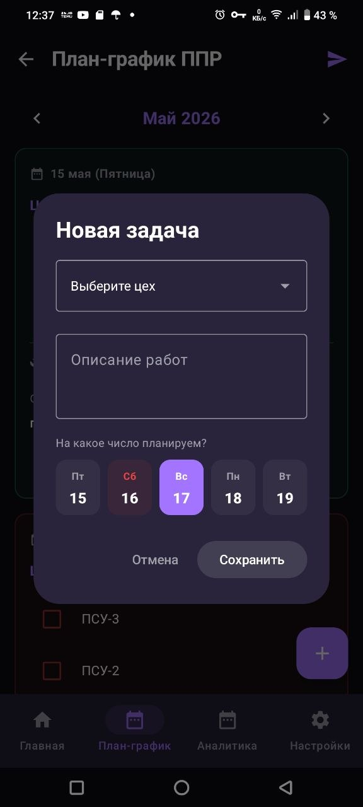
Контролируйте производственные показатели прямо с экрана телефона в режиме реального времени.
Monitor production metrics directly from your phone screen in real time.
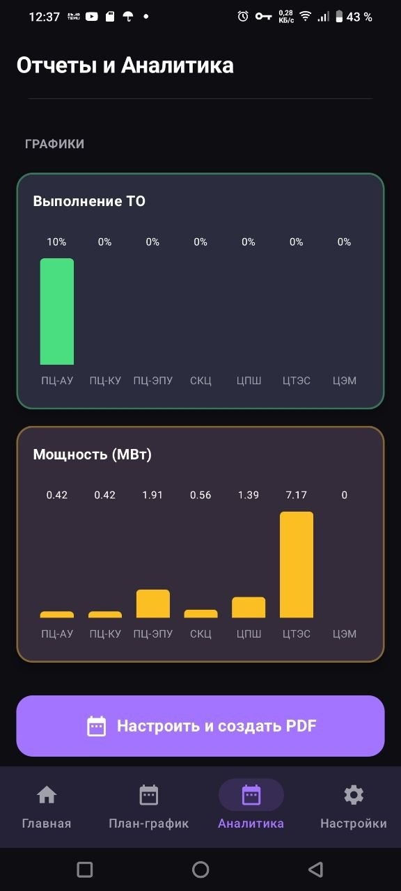
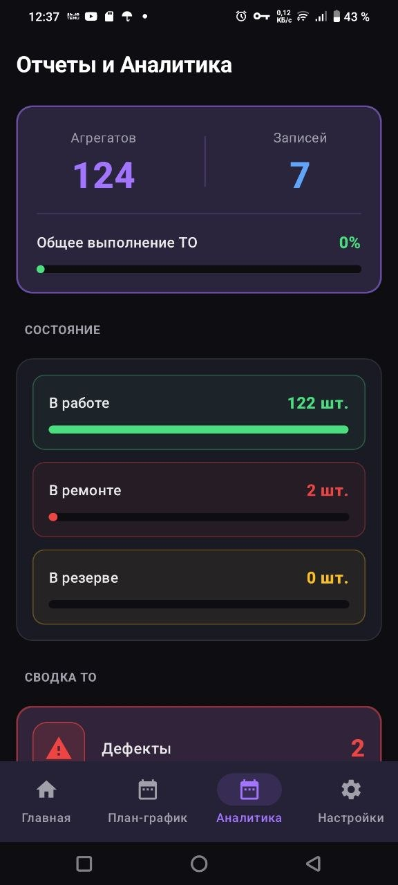
Приложение само напишет отчет начальству! Подключите бота и настройте автоматическую выгрузку данных.
/start, и приложение само найдет нужный Chat ID.The app will write reports for you! Connect a bot and set up automatic data export.
/start to the bot, and the app will auto-detect the Chat ID.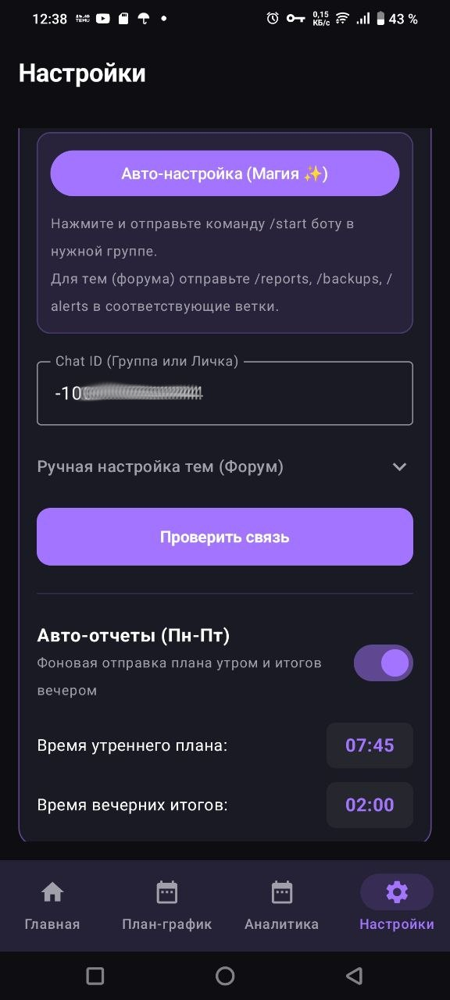
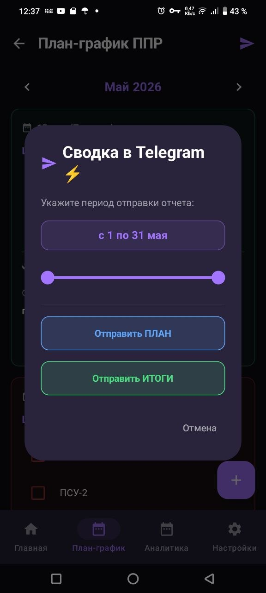
Генерируйте готовые к печати документы прямо на телефоне и отправляйте их в один клик.
Generate ready-to-print documents directly on your phone and share them in one click.
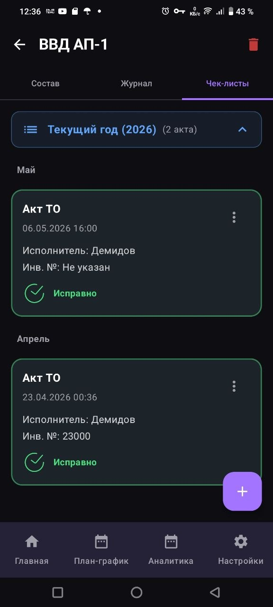
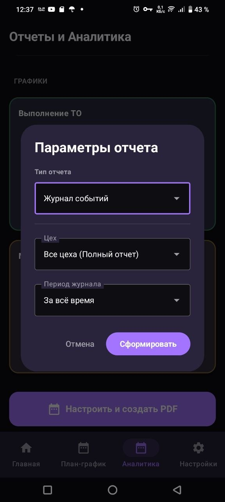
Адаптируйте приложение под себя и загрузите базу в пару кликов.
Adapt the app to your needs and upload your database in a few clicks.
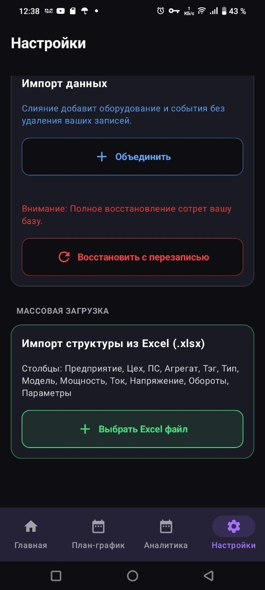
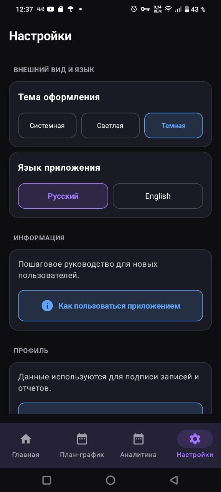
Управляйте своими базами данных и стандартами компании как профессионал.
.ijb напрямую в Telegram одним нажатием.Manage your databases and company standards like a professional.
.ijb directly to Telegram with one tap.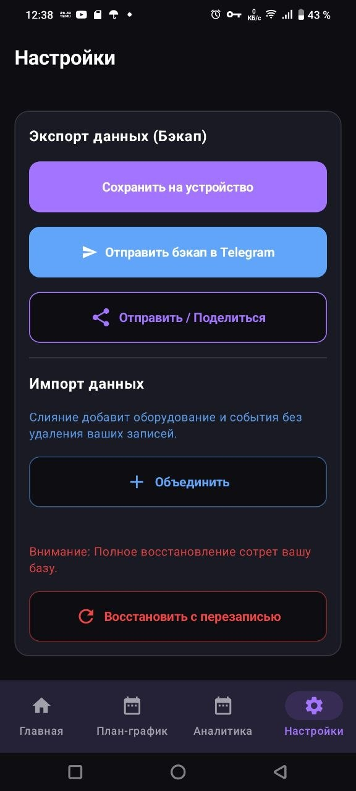
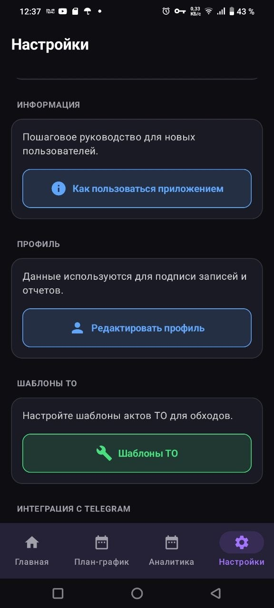